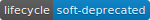

Substitutes provided variable names for recognised names. The case is not important. Where there are no matches missing values are returned. When strict = TRUE all words in a recognised variable must be present in x but when strict = FALSE (soft-deprecated) the only requirement is that the first word is present. When strict = FALSE recognised variables with the same first word such as "Iron Dissolved" and "Iron Total" are excluded from matches. In both cases the only requirement is that all words or just the first word are present in x. The order of the words does not matter nor does the presence of other words. This means that a value such as "Total Fluoride Hardness" matches two recognised variables which causes an error. The code also considers Aluminium to be a match with Aluminum.
substitute_variables(
x,
strict = TRUE,
messages = getOption("wqbc.messages", default = TRUE)
)| x | A character vector of variable names to substitute. |
|---|---|
| strict | A flag indicating whether to require all words in a recognised variable name to be present in x (strict = TRUE) or only the first one (strict = FALSE)  . |
| messages | A flag indicating whether to print messages. |
substitute_variables(c(
"ALUMINIUM SOMETHING", "ALUMINUM DISSOLVED",
"dissolved aluminium", "BORON Total", "KRYPTONITE",
"Total Fluoride Hardness"
), messages = TRUE)
#> Substituted 'ALUMINUM DISSOLVED' with 'Aluminum Dissolved' and 'BORON Total' with 'Boron Total'.
#> Failed to substitute 'ALUMINIUM SOMETHING', 'KRYPTONITE', 'Total Fluoride Hardness' and 'dissolved aluminium'.
#> [1] NA "Aluminum Dissolved" NA
#> [4] "Boron Total" NA NA